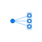

MultiPortMultiply a port; useful if multiple connections shall be made to a port exposing a state |

|
Information
This information is part of the Modelica Standard Library maintained by the Modelica Association.
This model is useful if multiple connections shall be made to a port of a volume model exposing a state, like a pipe with ModelStructure av_vb. The mixing is shifted into the volume connected to port_a and the result is propagated back to each ports_b.
If multiple connections were directly made to the volume, then ideal mixing would take place in the connection set, outside the volume. This is normally not intended.
Parameters (1)
| nPorts_b |
Value: 0 Type: Integer Description: Number of outlet ports (mass is distributed evenly between the outlet ports |
|---|
Connectors (2)
| port_a |
Type: FluidPort_a |
|
|---|---|---|
| ports_b |
Type: FluidPorts_b[nPorts_b] |
Used in Examples (1)
|
Modelica.Fluid.Examples.AST_BatchPlant |